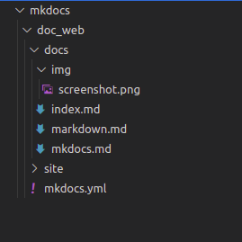

Tecnica de escritura con Markdown
En este apartado, veremos significa escribir en Markdown, y cuales son las convecciones y etiquetas que se utilizan para que el editor pueda procesarlo en un texto formateado.
Saltarse el formateado de texto
Como el tema que estamos tratando consiste en mostrar las diferencias entre el texto formateado y sin formatear, la mejor manera es utilizar las herramientas que nos permiten evitar que el texto sea formateado.
La forma basica de evitar el formateado es indentando el párrafo con tab o
con cuatro espacios en blanco.
Una forma mas evolucionada es delimitar el bloque entre una linea de virgulillas ~~~ o
una linea comillas invertidas ```. Deben ser tres o mas,
y con la misma cantidad al principio y al final.
Si se trata de codigo e incluimos el tipo de lenguaje al final de la linea inicial
(~~~yaml), el texto queda resaltado diferenciando los distintos elementos.
site_name: Soporte tecnico
nav:
- Inicio: index.md
- Soporte tecnico de esta web: mkdocs.md
- Tecnica de escritura : markdown.md
theme: readthedocs
Otro metodo es incluir una linea entre comillas invertidas `. Ademas, si casualmente el texto acotado necesita mostrar comillas invertidas en el texto, podemos delimitarlo con dos ``
Este texto se mostrara como una `linea` de código
Este texto se mostrara como una linea de código
Por ultimo, es interesante poder mostrar los signos utilizados para etiquetar el texto, para ello utilizamos una barra invertida \.
Por ultimo, es interesante poder mostrar los signos utilizados para etiquetar el texto, para ello utilizamos una barra invertida \\
Añadir links
Los links es lo mas caracteristico en cualquier pagina web, un metodo para conectar contenidos relacionados.
En markdown un link se realiza utilizando corchetes [] para incluir el texto mostrado, seguido de parentesis () con el enlace. Asi por ejemplo, link al inicio de esta pagina, tiene el siguiente texto simple:
[link al inicio de esta pagina](markdown.md#tecnica-de-escritura-con-markdown)
Se pueden utilizar referencias absolutas, relativas y cruzadas. En el caso de las referencias cruzadas que son las dirigidas a los encabezamientos del propio articulo, se basan en identificadores generados de forma automatica por el programa y las puede encontrar en la barra de direcciones del navegador. Pulse la direccion que desea en el navegador de la pagina y copie el texto que sigue al signo almohadilla, en la forma: [referencias cruzadas](#tecnica-de-escritura-con-markdown).
Otro metodo es que muestra el link directamente es utilizar paréntesis puntiagudos<> en la forma <http://google.es>, que se mostraria con http://google.es.
Si deseamos incluir una imagen, un signo de cierre de exclamacion ! debe preceder al formato del link. La siguiente imagen se obtiene escribiendo:
 
Utilizamos una referencia relativa hacia el directorio donde archivamos la imagen. En la segunda añadimos un texto entre comillas dobles, para mostrar un texto al posar el cursor.

Por ultimo, les dejo la referencia a un archivo con el texto simple completo de este articulo. Una linea [referencia](/src/markdown.txt) facilita la descarga del documento en su navegador.
Estructurar texto
Titulos y encabezados es la manera mas basica de estructurar un texto, y se hace con un signo introductorio de almohadilla #. El encabezado de este articulo esta formado por:
# Tecnica de escritura con Markdown
## Estructurar texto
### Este seria un encabezado del siguiente nivel
Otro metodo utiliza los signos igual \= y el signo menos -. Si bien solo dispone de dos niveles equivalentes a los dos primeros niveles:
Tecnica de escritura con Markdown
===
Estructura texto
---
Las listas{#listas} es otro tipo de organizacion, exitiendo:
- Listas ordenadas, que utilizan numeros
- Listas desordenadas, que utiliza indistintamente los signos:
- El signo *
- El signo +
- El signo -
1. Listas ordenadas, que utilizan numeros
2. Listas desordenadas, que utiliza indistintamente los signos:
* El signo \*
+ El signo \+
- El signo \-
Hay que indicar, que para anidar una lista se indenta con cuatro espacios.
Para enfatizar nuestro texto, se aplican indistintamente asteriscos * y guiones bajos_.
- simple en cursiva
_simple en cursiva_, *simple en cursiva* - doble en negrita
__doble en negrita__, **doble en negrita**
Para indicar que estamos citando a otro autor >se utiliza al inicio el signo de desigualdad \>
se utiliza al inicio el signo de desigualdad >
Los parrafos se generan con un espacio de una linea en blanco. Añadir mas de una linea no se traduce en un mayor numero de lineas en el texto formateado.
Para hacer un salto de linea incluido en el mismo parrafo, es preciso cerrar la linea con dos espacios antes de dar a la tecla Enter.
Para remarcar el cierre de una seccion se puede añadir una linea mediante asteriscos \*, guiones -, y guiones bajos _, indistintamente. Por ejemplo, el siguiente texto origina tres lineas identicas.
---
***
___
Conclusion
Markdown nos ofrece un numero abundante de etiquetas, que actuan como atajos para procesar el texto que escribimos directamente en el teclado. Acostumbrarse a usarlos lleva tiempo, pero al final nos permite escribir un texto embellecido con mucha mayor rapidez en el momento de crear nuestro blog. Existen una serie de caracteristicas avanzadas, que suponen una evolucion posterior del lenguaje original y que se denomino Multimarkdown. Seran tratadas en nuestro proximo articulo.